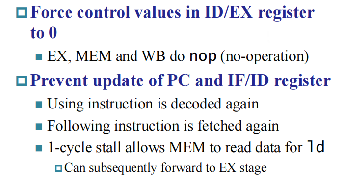
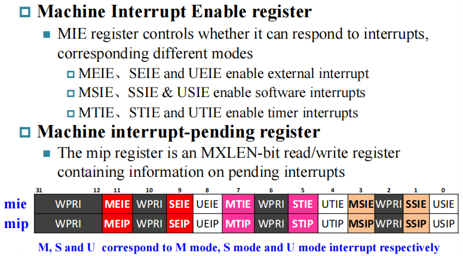

Processor Design¶
约 2919 个字 预计阅读时间 10 分钟
Introduction¶
- CPU performance factors
- 指令数量：由 ISA 和编译器决定
- CPI and Cycle Time: Determined by CPU hardware
Instruction Execution Overview¶
- For every instruction, the first two step are identical
- Fetch the instruction from the memory
- Decode and read the registers
- Next steps depend on the instruction class
- Memory reference
- Arithmetic logical
- branches
- Depending on instruction class
- Use ALU to calculate: arithmetic result, memory address for load/store, branch comparison
- Access data memory for load/store
- PC <- target address or PC + 4

回顾在计逻中介绍的，我们不能直接将两根线连在一起，这时候我们就需要多路选择器来控制 CPU 的传输，综合起来就是一个控制单元。

Building a Datapath¶
- Datapath: Elements that process data and adresses in the CPU.
Instruction execution in RISC-V¶
Instruction Fetch¶
在不考虑跳转的时候，由于 PC 没有控制信号，每个时钟周期都加 4。
R-Format Instructions

寄存器的模块中，读取没有控制信号，写有控制信号。对于 R-Format 的指令，我们将从寄存器中读取的数据经过 ALU 计算，将结果写入 Register。
Load/Store Instructions

上图右侧的立即数扩展单元，由于 Load/Store 需要用 ALU 进行地址计算，但 ALU 是 64 位的，因此我们需要将 12 位的立即数扩展成 64 位。
Branch Instructions

其中左移一位的原因是：注意到我们 PC 相对寻址，是将 PC 指针加上立即数乘以 2 (指令中存储的立即数是没有第 0 位的)。
Composing the Elements
由于我们整个过程都需要在一个时钟周期内完成，而 datapath 中的每一元件只能一次计算一个 function，因此我们将指令内存和数据内存分开。
Path Built using Multiplexer¶
R type Instruction & Data Stream¶

首先根据指令读取两个源寄存器和一个目的寄存器，经过寄存器单元得到源寄存器的数据，送到 ALU 计算单元。根据指令中的 opcode 决定进行 ALU 运算， 根据 fun3 和 fun7 决定进行哪种 ALU 运算，最后 ALU 运算结果写入目的寄存器中。
I type Instruction & Data Stream¶
首先根据指令读取两个寄存器，经过寄存器单元得到源寄存器的数据。根据指令读取立即数，并经过立即数扩展单元将 12 位立即数扩展成 32 位，与寄存器中的数据经过 ALU 运算得到内存地址，送入 Memory 中得到数据，最后写入目的寄存器中。
S type Instruction & Data Stream¶
需要注意的是 sw 指令是没有最下面写进寄存器的数据通路的。
SB type Instruction & Data Stream¶

首先将指令中两个寄存器的值取出来，经过寄存器单元得到相应数据，通过 ALU 进行比较。其次将指令中的立即数取出，通过立即数扩展单元并左移一位后与 PC 相加，最后根据 ALU 的计算结果判断是否跳转。
Jal type Instruction & Data Stream¶

需要注意的是上图没有将 PC + 4 的值存在寄存器中。
R-Type/Load/Store Datapath
Full Datapath

现在我们需要决定选择信号的值，这时候就需要控制单元。
A simple Implementation Scheme¶
Analyse for cause and effect
- Information comes from the 32 bits of instruction
- Selecting the operations to perform(ALU, read/write, etc.)
- Controlling the flow of data(multiplexor inputs)
- ALU's operation based on instruction type and function code.


ALU Control¶
ALU used for:
- Load/Store: F = add
- Branch: F = subtract
- R-type: F depends on opcode
Scheme of Controller

知道 opcode 之后大部分控制信号都已经定下来了, 仅对于 R-type 指令我们需要根据 function code 进一步判断进行哪种操作，因此我们对控制信号做两级解码。
Designing the Main Control Unit(First Level)¶

我们先进行第一层解码，通过指令的 opcode 将控制信号分为三大类：ALU operation, Mux, R/W。进一步我们将 ALU op 解码成 2 位，如上图所示。
因此我们可以根据 opcode 得到所谓的真值表。
Design the ALU Decoder(Second Level)¶
ALU operation is decied by 2-bit ALUOp derived from opcode, and funct7 & funct3 fields of the instruction.
Datapath with Control

Pipelining¶
首先我们假设 Memory 访问需要 200ps, ALU 和加法器需要 200ps, 访问 register file 需要 100ps, 则对于单周期 CPU 各种操作的时间如下表所示：
我们可以发现每一种指令执行的时间实际上是不一样的。因此对于单周期 CPU，我们只能选取最长的时间作为时钟频率。考虑实际应用中，ld 指令其实相对比较少(总不可能一直在访问 Memory ), 因此降低了 CPU 的性能。
总结如下：
- Longest delay determines clock period
- Critical path: load instruction
- Not feasible to vary period for different instructions
- Violates design principle: making the common case fast
因此我们引入流水线的概念来提升性能。
RISC-V Pipeline¶
Five stages, one step per stage
- IF: Instruction fetch from memory
- ID: Instruction decode & register read
- EX: Execute operation or calculate address
- MEM: Access memory operand
- WB: Write result back to register 7

Pipeline Speedup¶
- If all stages are balanced(all take the same time):
- Time between instructions = Nonpipelined / Number of stages
- If not balanced, speedup is less
- Speedup due to increased throughput, latency(time for each instruction) does not decrease
Pipelining and ISA Design¶
RISC-V ISA designed for pipelining
RISC-V 的架构很适合流水线加速：
- All instructions are 32 bits, easier to fetch and decode in one cycle.
- Few and regular instruction formats
- can decode and read registers in one step.
- Load/store address
- can calculate address in 3rd stage, access memory in 4th stage.
但是流水线也存在问题：试想一种情况，一条指令需要用到上一条指令存到寄存器的数据作为操作数，但是上一条指令 WB 在第五个时钟周期完成，而该指令在第二个周期就要执行，造成错误。
Hazards¶
- Situations that prevent starting the next instruction in the next cycle.
- Structure hazards
- A required resource is busy(一条指令处在 ID，另一条指令处在 WB，有可能出现结构竞争)
- Data hazard
- Need to wait for previous instruction to complete its data read/write
- Control hazard
- Deciding on control action depends on previous instruction
Structure Hazards¶
In RISC-V pipeline with a single memory
- Load/Store requires data access
- Instruction fetch would have to stall for that cycle
- Would cause a pipeline "bubble"
Data Hazards¶

解决方案是在两条指令中插 bubble，这时 WB 和 ID 在同一个地方，我们只需在前半个时钟写入(时钟下降沿写)，后半个时钟读即可。
Forwarding
但是这种情况经常发生，如果一直插 bubble 的话，流水线加速的意义就不是很明显了。 注意到上图中，add 的结果在 EX 步骤就得到了，实际上是不需要经过 MEM 的，这时我们采用 Forwarding 的方法，如下图所示：

但如果前面是个 load 指令，需要在 MEM 访问完之后才得到数据，因此必须插一个 bubble，如下图所示：

或者我们可以 reschedule code to avoid stalls：
Control Hazards¶
- Branch determines flow of control
- Fetching next instruction depends on branch outcome
- Pipeline can't always fetch correct instruction(still working on ID stage of branch)
- In RISC-V pipeline
- Need to compare registers and compute target early in the pipeline
- Add hardware to do it in ID stage
Pipeline Summary
- Pipelining improves performance by increasing instruction throughput.
- Subject to hazards.
- Instruction set design affects complexity of pipeline implementation.
RISC-V Pipelined Datapath¶
Pipeline registers

流水线填满的时候，每个 stage 执行的都是不同的指令，因此我们需要流水线寄存器存储指令。
Example
对于 load 指令的 WB 阶段，我们不能直接写回 register，因为此时的控制信号与写回地址是处在 IF/ID 寄存器中的指令。因此我们需要保存该指令的相关信号，如图中蓝线所示。
Multi-Cycle Pipeline Diagram

Single-Cycle Pipeline Diagram
Pipelined Control¶

Data Hazards¶

首先需要注意的是，并不是只有相邻指令才需要 forwarding 的，需要画出 multi diagram 判断，如上图所示。
并且第一条指令与第二、三条是有数据竞争的，与后面两条指令并不冲突。
Detecting the Need to Forward¶
我们在每一级的寄存器中都会有编号：
ID/EX.RegisterRs1: register number for rs1 sitting in ID/EX pipeline register.
- ALU operand register numbers in EX stage are given by
ID/EX.RegisterRs1, ID/EX.RegisterRs2. - Data hazards when:
- EX/MEM.RegisterRd = ID/EX.RegisterRs1
- EX/MEM.RegisterRd = ID/EX.RegisterRs2
- MEM/WB.RegisterRd = ID/EX.RegisterRs1
- MEM/WB.RegisterRd = ID/EX.RegisterRs2
但是只有需要写回寄存器的指令需要 forwarding：
- EX/MEM.RegWrite, MEM/WB.RegWrite
- EX/MEM.RegisterRd 和 MEM/WB.RegisterRd 不是
x0。
Forwarding Paths

Double Data Hazard
Revised Forwarding Condition
不是很理解
Load-Use Hazard Detection¶
How to Stall the Pipeline

Stalls and Performance
- Stall reduce performance, but are required to get correct results.
- Compiler can arange code to avoid hazards and stalls.
Branch Hazards¶
一个很直观的想法就是把中间三条指令 flush 掉，但是这样我们就要等比较长的时间，因此我们考虑 reducing branch delay:
Move hardware to determine outcome to ID stage
- Target address adder
- Register comparator
Branch Taken
在 ID 阶段判断是否跳转，如果跳转，则将当前处在 IF 阶段的指令 flush, 产生一个 bubble, bubble 过后直接执行跳转指令。

但是对于拆得更深的流水线(这里我们举的例子都是五级流水线，即将一条指令的 datapath 拆成五个阶段)，使用上述的方法会增加代价。
Dynamic Branch Prediction
- Branch prediction buffer(branch history tabel)
- Indexed by recent branch instruction addresses
- Stores outcome(taken/not taken)
- To execute a branch
- Check table, expect the same outcome
- Start fetching from fall-through or target
- If wrong, flush pipeline and flip prediction
即建立一个索引表，存的是上次分支指令时是否命中，当前指令根据表中信息决定是否跳转，若不命中则更新表。
但是对于双层循环会存在问题：
2-Bit Predictor
Only change prediction on two successive mispredictions

Even with predictor, still need to calculate the target address, resulting in 1-cycle penalty for a taken branch.
Branch targte buffer:
- Cache of target addresses
- Indexed by PC when instruction fetched
只存最新用的。
CPU within Exception¶
Exception(Interruption)¶
- The cause of changing CPU's work flow:
- Control instructions in program(bne/beq, j/jal, etc.), which is foreseeable in programming flow.
- Something happen suddenly(Exception and Inerruption), which is unpredictable
- Unexpected events:
- Exception: from within processor(overflow, undefined instruction, etc.)
- Interruption: from outside processor(input/output)
How Exceptions are handled?¶
- What must the processor do?
- When exception happens, the processor must do something.
- The predefined process routines are saved in memory when computer starts. (提前写好了程序)
- Problem:
- How can CPU go to relative routine when an exception occurs
- CPU should know: the cause of exception and which instruction generate the exception
RISC-V Privileged¶

RISC-V interrupt structure¶
- 所有的硬件实现必须提供 M-mode
- as this is the only mode that has unfettered access to the whole machine.
- The simplest RISC-V implementations may provide only M-mode.
- Machine mode most important task
- to intercept and handle interrupts/exceptions
- There are 4096 Control and Status Registers(CSRs)
CSRs¶
CSR 寄存器是专门用来处理中断/异常的寄存器，要用特权指令来访问。 这些指令可以分为两类：原子操作(read-modify-write, 一步完成)的指令和其它特权指令。
CSR Instruction
CSR 指令是专门用来更新 csr 寄存器的。
- CSRRW: 将 csr 的值读到 rd 寄存器，同时把 rs 的值更新到 csr 中。
- CSRRS: 将 csr 的值读到 rd 寄存器，同时 csr = csr | rs1 (set, 将对应的位变成 1 )。
- CSRRC: 将 csr 的值读到 rd 寄存器，同时 csr = csr ^ rs1 (clear)
Interrupts Instruction
- MRET: 从什么模式进到机器模式，就回到什么模式。其中 MEPC 是跳转过去的指令地址。
- ecall：MEPC = ecall 指令本身的 PC 值。跳转到某个模式。
- ebreak: MEPC = ebreak 指令本身的 PC 值。
需要注意的是，我们一般是把下一条指令(PC+4)放到返回值的，但是这里我们将 ecall 本身的 PC 值赋给 MEPC。其实跳转过去的模式下的指令会将 MEPC 修改成希望返回的值。
Exception & Interrupt related registers
- mstatus
- Machine STATUS register
- Global interrupt enable bits:
MIE,SIE,UIE(provided for each priviledge mode) 不同模式下中断的管理情况(是否允许中断发生) xPIEholds ths value of the interrupt enable bit active prior to the trap. (进来之前的中断使能信号)xPPholds the previous privilege mode. (进来之前的模式)
- Global interrupt enable bits:
- mie/mip
更细的管理，局部使能。

- mtvec
产生中断后，CPU 需要知道去哪里执行中断程序。
对于查询模式，PC 直接跳到 BASE， 然后根据 mcause 的值来执行对应的处理。
对于向量模式(只对中断有效)，则直接跳转。
- mepc

- mcause

RISC-V Interrupt priority

创建日期: 2024年4月16日 22:03:28